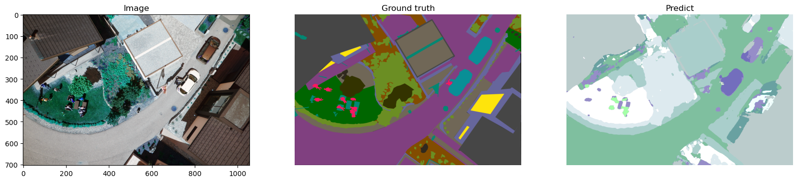
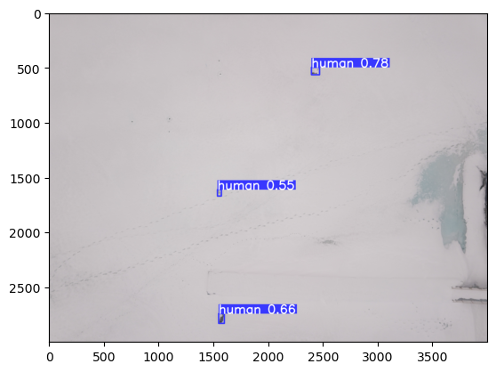
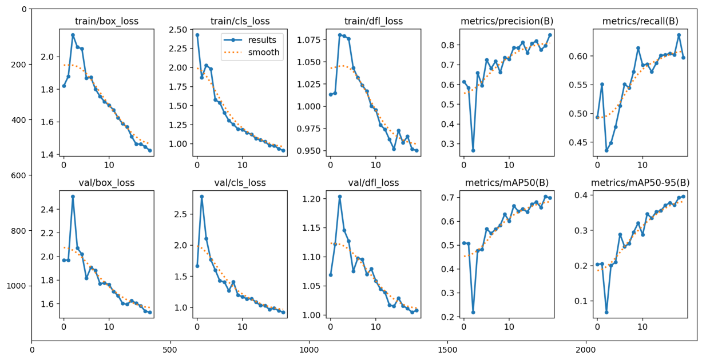
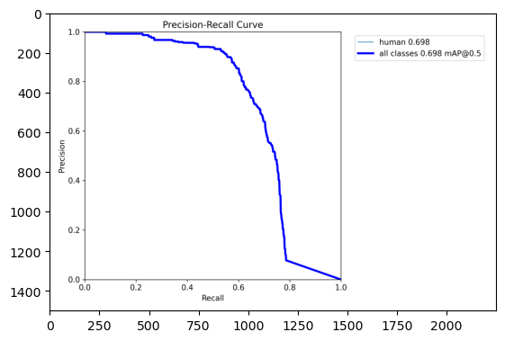
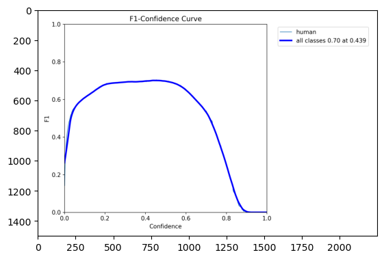
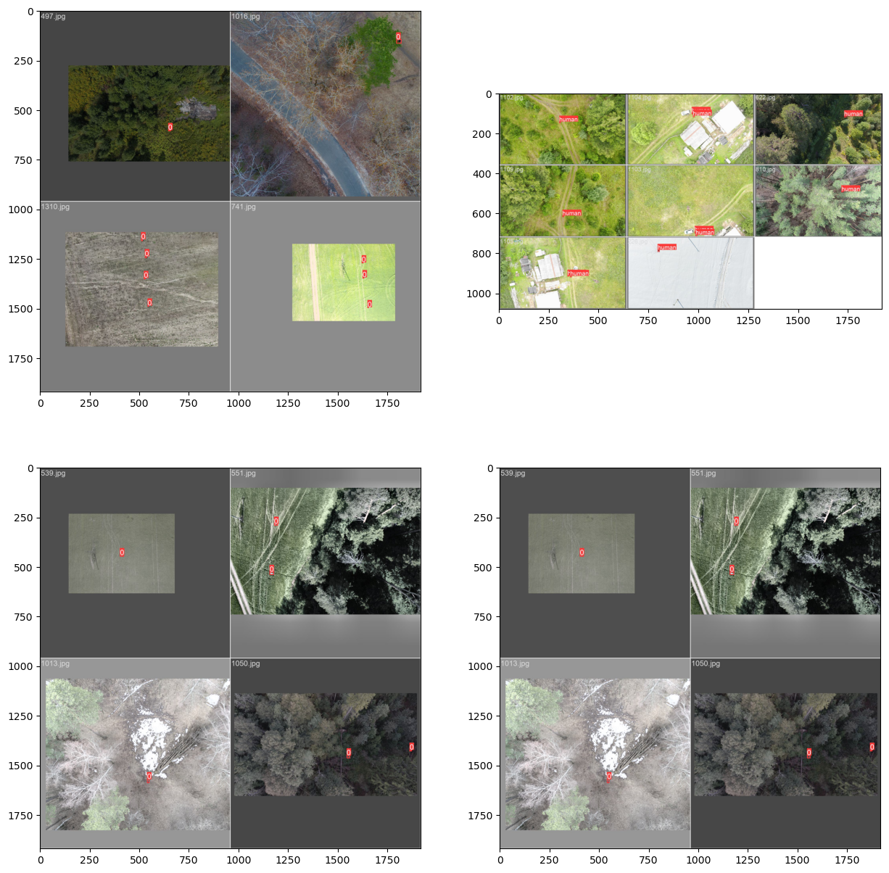

Finding missing people from the air.
An applied computer-vision project toward an autonomous drone that detects people in hard-to-reach terrain, in real time, on the aircraft itself, with no dependence on a network.
Every year thousands of people go missing in forests, mountains and flood plains, where ground search is slow and limited by manpower. A drone carrying an on-board detector can cover in minutes what a search party covers in hours, flagging likely humans for a rescuer to confirm.
The Russian volunteer SAR organisation LizaAlert and the "Owl" group began collecting drone imagery of people in the wild. That data became the foundation of this project. Strix asks one focused question: can a network small enough to fly find a person from altitude, in real time, on the aircraft?
The research ran in phases, each one answering the failure of the last. It started with the most precise idea on paper, hit two hard walls, and pivoted to what actually flies.
The hypothesis: dense masks give the most precise localisation of tiny aerial targets. Built on PyTorch Lightning with a custom weather-augmentation pipeline (rain, snow, fog, sun, defocus) to stretch a 400-image dataset across four architectures, from Mask R-CNN to DeepLabV3+.
| Model | Mean IoU | Person IoU | Notes |
|---|---|---|---|
| Mask R-CNN | 0.54 | 0.31 | Heavy, ~5 FPS, noisy at altitude |
| UNet | 0.52 | 0.27 | Fast, weak on tiny people |
| UNet++ | 0.56 | 0.31 | Nested skips help edges |
| DeepLabV3+ | 0.58 | 0.34 | Best, ASPP global context, val acc 0.85 |

Both walls point the same way: drop per-pixel masks, switch to detection. Boxes are far cheaper than masks, more robust in the tiny-object regime, and fast enough for edge hardware. For SAR, "a human is in this frame, here" is exactly the actionable output. This is the approach that shipped.
YOLOv8-nano, trained on the Lacmus Drone Dataset at 1280 px input, 20 epochs, tracked with ClearML and Weights & Biases. Evaluated on 136 held-out images holding 606 annotated people.





Click any figure to enlarge. The operating point is precision-dominated: a false alarm costs an analyst a few seconds, a missed person can cost a life, so every flagged frame is escalated to a human.
A size sweep on the same data and target board. Larger backbones barely move accuracy on a low-variance, single-class dataset, so their capacity is wasted. The nano model and the cheapest capable board were co-selected.
Choosing the smallest sufficient detector is what made the cheapest board affordable. The 6.3 MB nano checkpoint fits the Jetson Nano with headroom to spare for the capture and telemetry pipeline.
Inference must run on-board: telemetry latency, wilderness dead-zones and the autonomy loop all rule out offloading to the ground. Four boards were evaluated for YOLOv8n. Board choice barely moves endurance, so the real axis is throughput at the resolution the mission needs.
The Jetson Nano was the right call for a volunteer, budget-bound 2023 build: cheapest at $149, the maturest CUDA and TensorRT stack, and a perfect fit for the 6.3 MB nano model at ~15 FPS on 640 px input. Every board costs only 13 to 18% of hover endurance, a spread of about 31 seconds, so endurance never decided it.
The analysis also names the performance choice. Detecting a person from 40 to 50 m really wants 1280 px input, and the Xavier NX is the only board holding real time there, for a sub-minute endurance cost. A 2026 rebuild would move to the Jetson Orin Nano Super, which ports the same pipeline and clears 100 FPS.